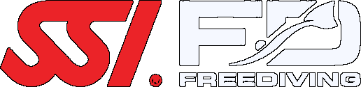
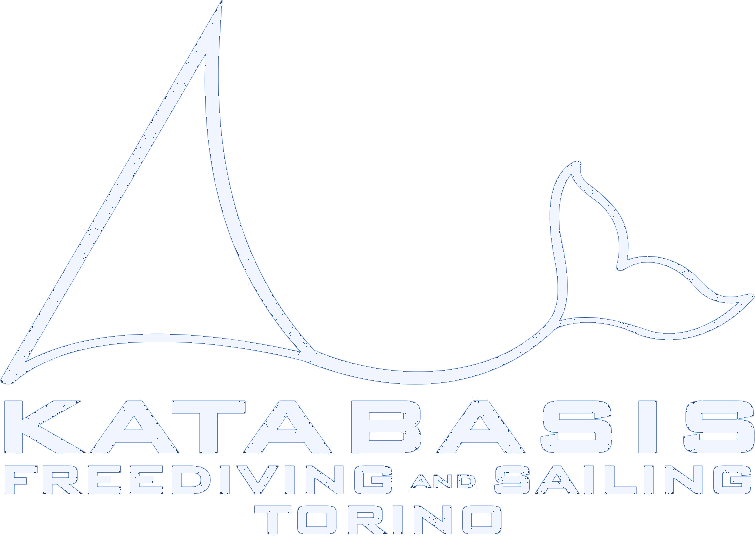
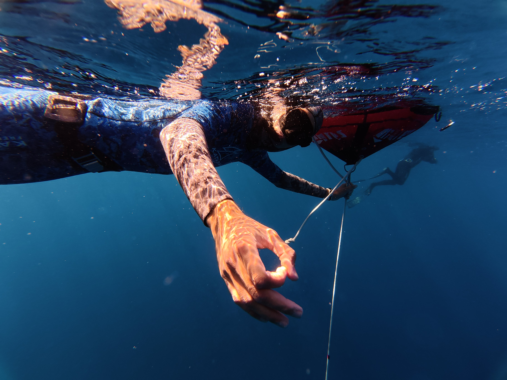
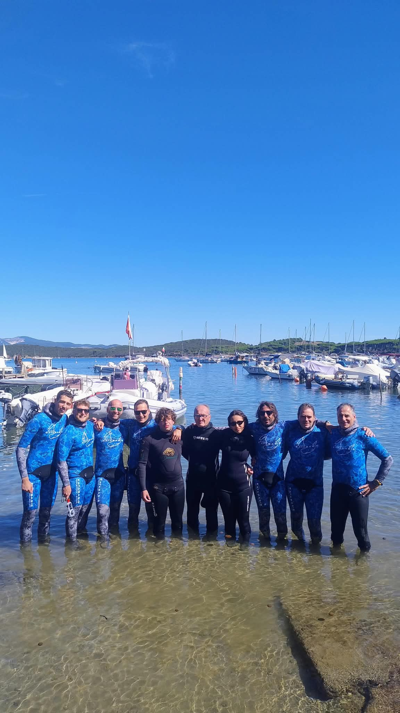

Didattica & collaborazioni



Percorsi di apnea per adulti e ragazzi a Torino, sessioni tecniche a 10 metri nella piscina di Venaria Reale e indimenticabili esperienze estive al mare.
profondità personale
apnea statica personale
da luglio 2025 · Freediver dal 2019
certificazioni e brevetti personali
Didattica & collaborazioni


Spesso si immagina l'apnea come una sfida estrema o uno sforzo di resistenza. Il mio approccio è l'esatto opposto: ricerco la calma mentale, l'economia del movimento e il benessere in acqua, rispettando sempre i ritmi naturali del corpo.
L’apnea inizia in superficie, prima di immergersi. Il rilassamento diaframmatico abbassa il battito cardiaco e dissolve la tensione muscolare: sott'acqua si scoprono una pace e una presenza mentale uniche.
In apnea la prima regola è chiara: mai soli in acqua. Grazie alla didattica SSI l’assistenza reciproca diventa un gesto naturale, fatto di attenzione, lucidità e rispetto: quando la sicurezza è condivisa, la mente è più libera.
Ogni tensione inutile consuma energia preziosa. Attraverso una pinneggiata precisa, un assetto curato e una compensazione dolce, il movimento si fa economico e fluido, trasformando la discesa in un gesto naturale.
Dagli allenamenti continuativi invernali a Torino fino alle esperienze estive nelle acque di Liguria e Toscana.
Piscina Sisport (Torino) · Martedì sera
Un percorso pensato per tutti coloro che vogliono sviluppare una grande acquaticità e sicurezza. Il lavoro in vasca include apnea dinamica con e senza pinne, tecniche di respirazione e sicurezza, in un ambiente stimolante ed esente da stress agonistico.
Piscina con Fossa 10m · Venaria Reale
Per chi vuole iniziare o affinare la propria tecnica di compensazione (Frenzel) e discesa sul cavo. Grazie all'accesso alla piscina con fossa profonda 10 metri a Venaria Reale, puoi allenare l'assetto costante e la decompressione in acqua limpida e a temperatura controllata.
Liguria & Toscana · Baratti, Portofino, Nervi
Uscite e weekend dedicati alla discesa sul cavo e all'esplorazione del mare. Dalle sessioni di profondità in assetto costante alle immersioni ricreative lungo la costa ligure e toscana, per trasferire le competenze acquisite in piscina direttamente nel blu.
Risoluzione Blocchi, Tecnica & Preparazione
Percorsi individuali costruiti sulle tue esigenze specifiche: superamento di problemi di compensazione, gestione dell'ansia da profondità, preparazione per esami brevetti SSI o perfezionamento dello stile di pinneggiata e assetto.

Certificazione Internazionale
Freediving Instructor
Il mio viaggio nell'apnea è iniziato esattamente dove oggi porto i miei allievi: da ragazzino, partecipando ai campus estivi a Genova Nervi. Lì ho scoperto che scendere sott'acqua non significava "sfidare" il mare, ma entrare in una sintonia profonda con esso e con il proprio corpo.
Quella passione è cresciuta negli anni fino a trasformarsi in una scelta professionale: sono diventato **Istruttore certificato SSI Freediving**, collaborando a stretto contatto con **Francesco Escoffier**, con l'associazione **Sport&Natura** a Torino e con il circuito **Katabasis**.
Oggi il mio obiettivo principale è insegnare l'apnea come **strumento di crescita personale, sicurezza e serenità**. Con i ragazzi delle medie e delle superiori metto al centro la fiducia in se stessi e la cura del compagno; con gli adulti ricerco la precisione tecnica e la decompressione mentale dai ritmi quotidiani.
Tutto ciò che serve sapere prima di iniziare, per genitori e nuovi allievi.
Assolutamente sì. Nei corsi giovani non si ricercano mai massimali o sforzi estremi. L'insegnamento si concentra su acquaticità, gioco in acqua, coordinazione, respirazione e mutuo soccorso tra compagni. L'istruttore è costantemente in acqua e segue gli allievi a distanza di sicurezza per tutto l'allenamento.
No, basta avere una normale confidenza con l'acqua (saper galleggiare e spostarsi agevolmente). L'apnea insegna proprio a muoversi senza fatica e con la massima fluidità idrodinamica.
Per la piscina a Torino sono sufficienti costume, cuffia, maschera subacquea a basso volume e un paio di pinne (anche corte per iniziare). Per le uscite in mare o fossa consigliamo una muta umida (3mm o 5mm) che possiamo aiutare a scegliere o noleggiare.
Per le attività in piscina e corsi base è richiesto il consueto certificato medico di idoneità all'attività sportiva non agonistica con elettrocardiogramma (ECG). Per attività avanzate o di profondità superiore indicheremo la tipologia specifica richiesta.
Che tu sia un genitore che desidera far provare l'apnea a proprio figlio, o un appassionato che vuole perfezionarsi nella fossa da 10 metri, scrivimi senza impegno per qualsiasi informazione.
Torino · Venaria Reale · Genova Nervi · Didattica Certificata SSI Freediving